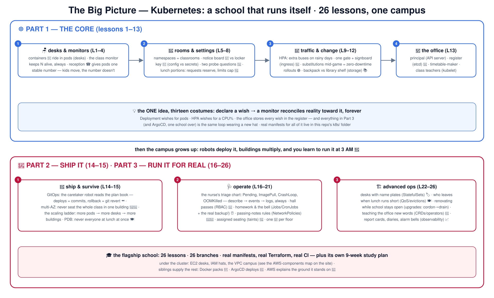

🏫 School Platform — Kubernetes टप्प्याटप्प्याने शिका
एक खरा प्रोजेक्ट — दोन services असलेली शाळा व्यवस्थापन प्रणाली — प्रत्येक DevOps साधन त्याच्या कामासह शिकवण्यासाठी वापरलेला. गुंतागुंतीच्या कल्पना, पाच वर्षांच्या मुलाला समजतील अशा, शाळेच्या उपमा, आकृत्या आणि प्रत्यक्ष प्रयोगांसह.
यादी उघडा → · अभ्यास योजना →
🗺️ संपूर्ण चित्र — एक आकृती, संपूर्ण शाळा
सर्व 26 धडे एका कॅनव्हासवर. 4K आवृत्तीसाठी क्लिक करा.
{kind=link}

🧠 Kubernetes चे मानसिक मॉडेल — लक्षात ठेवायचे एक चित्र
Docker शाळा source → Dockerfile → इमेज → रजिस्ट्री → Kubernetes वर संपते. हे पुढचे चित्र: त्या इमेजचे Kubernetes काय करते, आणि सर्व 26 धड्यांखालची एकच कल्पना.
🧠 तुम्ही जाहीर करता → Deployment → Pods → कंटेनर · Service · Ingress · HPA · Scheduler · Kubelet
तुम्ही Kubernetes ला कधीच काय करायचे ते सांगत नाही — गोष्टी कशा असाव्यात ते सांगता. Controllers इच्छित आणि प्रत्यक्ष यांची तुलना करतात आणि दरी बुजवतात, कायम.
🌳 Object hierarchy — तुकडे एकमेकांत कसे बसतात
सगळे एका Namespace मध्ये राहते; workloads एकमेकांत बसतात; उजवीकडचे दोन बाण हेच पहिल्या दिवशी लागणारे cross-links.
Cluster
├── Node, Node, Node … (desks — EC2 in this EKS setup)
└── Namespace (classroom)
├── Deployment Ingress → Service → Pods
│ └── ReplicaSet HPA → Deployment → Pods
│ └── Pod ×N
│ └── Container(s)
├── Service
├── ConfigMap · Secret
├── PVC → PV (storage, L12)
└── Job / CronJob · StatefulSet · DaemonSet (L18 · L22 · L21)🎓 26 धडे — तीन भाग
📅 गती कशी ठेवावी कळत नाही? 9-आठवड्यांची अभ्यास योजना अनुसरा — क्रम, वेळेचे अंदाज, साप्ताहिक टप्पे आणि कळस-प्रकल्प, प्रगती ब्राउझरमध्ये जपलेली.
धडे ब्रँचवर राहतात — ब्रँच 05 मध्ये धडे 01–05 आहेत, म्हणून कुठेही थांबून पुन्हा सुरू करू शकता. धडा थेट GitHub वर वाचण्यासाठी कार्डवर क्लिक करा (आकृत्या तिथे दिसतात), किंवा ब्रँच स्थानिक checkout करा. चित्रे आवडतात? सर्व 26 धडे एका पानावर क्रमांकित बॉक्स-आणि-बाण आकृत्या म्हणूनही काढले आहेत.
bash scripts/check-setup.sh. 📊 cheat sheet आणि 🩺 triage card उघडे ठेवा.☸️ भाग 1 — Kubernetes चा गाभा (धडे 1–13)
⏱️ ~9 तास · 💰 मोफत (तुमच्या लॅपटॉपवर minikube / kind / k3d) · एक git ब्रँच = एक कल्पना; ब्रँच 07 मध्ये धडे 01–07 आहेत.
🍱 कंटेनर & इमेज
lesson-01-containersधडा वाचा →आकृती पहा ↗🪑 Pods
lesson-02-podsधडा वाचा →आकृती पहा ↗🧑🏫 Deployments
lesson-03-deploymentsधडा वाचा →आकृती पहा ↗☎️ Services
lesson-04-servicesधडा वाचा →आकृती पहा ↗🔑 ConfigMaps & Secrets
lesson-06-configmaps-secretsधडा वाचा →आकृती पहा ↗🙋 Health probes
lesson-07-health-probesधडा वाचा →आकृती पहा ↗🍛 Requests & limits
lesson-08-resourcesधडा वाचा →आकृती पहा ↗🚌 Autoscaling
lesson-09-autoscalingधडा वाचा →आकृती पहा ↗🏫 Ingress
lesson-10-ingressधडा वाचा →आकृती पहा ↗⚽ Rollouts & rollbacks
lesson-11-rolloutsधडा वाचा →आकृती पहा ↗📚 Storage & state
lesson-12-storageधडा वाचा →आकृती पहा ↗🏢 पडद्यामागे
lesson-13-under-the-hoodधडा वाचा →आकृती पहा ↗🚚 भाग 2 — पाठवणे & वाढवणे (धडे 14–15)
ऐच्छिक नाही: भाग 3 दोन्हीवर अवलंबून आहे. GitOps ही deploy ची यंत्रणा आहे जी ऑपरेशन्सचे धडे गृहीत धरतात; multi-AZ आणि scaling ची शिडी हा ते ज्यावर चालतात तो आराखडा. धडा 14 मुद्दाम प्रास्ताविक राहतो — ArgoCD शाळा हा खोल अभ्यास.
🤖 CI/CD & ArgoCD (प्रास्ताविक)
lesson-14-deploy-gitopsधडा वाचा →आकृती पहा ↗🏫🏫 Multi-AZ & scaling
lesson-15-multi-az-scalingधडा वाचा →आकृती पहा ↗🛠️ भाग 3 — production मध्ये Kubernetes चालवणे (धडे 16–26)
cluster उभा आहे — आता तो चालवायला शिका: debug करा, सुरक्षित करा, schedule करा, अपग्रेड करा, वाढवा, आणि त्याचा श्वास पहा. तेच स्वरूप, तीच शाळा.
🩺 Debugging मार्गदर्शिका
lesson-16-debuggingधडा वाचा →आकृती पहा ↗🪪 RBAC & ServiceAccounts
lesson-17-rbacधडा वाचा →आकृती पहा ↗⏰ Jobs & CronJobs
lesson-18-jobs-cronjobsधडा वाचा →आकृती पहा ↗🚫📝 NetworkPolicies
lesson-19-network-policiesधडा वाचा →आकृती पहा ↗🎫 Taints & affinity
lesson-20-taints-affinityधडा वाचा →आकृती पहा ↗🏷️ StatefulSets
lesson-22-statefulsetsधडा वाचा →आकृती पहा ↗🍽️ QoS & evictions
lesson-23-qos-evictionsधडा वाचा →आकृती पहा ↗🏗️ Cluster अपग्रेड
lesson-24-cluster-upgradesधडा वाचा →आकृती पहा ↗🤖 CRDs & operators
lesson-25-crds-operatorsधडा वाचा →आकृती पहा ↗📈 Observability
lesson-26-observabilityधडा वाचा →आकृती पहा ↗# take the course locally:
git clone https://github.com/BaluRaut/learn-kubernetes-school.git
cd learn-kubernetes-school
git checkout lesson-01-containers # then open lessons/01-containers/README.md☸️ खरे k8s manifests
धडे शिकवतात त्या खऱ्या YAML फाइल्स — प्रत्येक भरपूर टिप्पण्यांसह, k8s/ मध्ये. या क्रमाने वाचा (हाच apply चा क्रम आहे):
🔑 secret.example.yaml
धडा 06फाइल उघडा →🧑🏫 deployment.yaml
धडे 03 · 07 · 08 · 11फाइल उघडा →🐍 analytics-deployment.yaml
धडे 03 · 04फाइल उघडा →☁️ cluster खालचे AWS घटक — उद्देश, आवश्यक की ऐच्छिक
"EC2 चा Kubernetes शी संबंध आहे का?" — पूर्णपणे: Kubernetes EC2 ची जागा घेत नाही, तो त्याच्यावर बसतो. या EKS रचनेत, kubectl get nodes मध्ये दिसणारा प्रत्येक node हा EC2 instance आहे (भाड्याचा बाक 🖥️) — Kubernetes स्वतः कोणत्याही मशीनवर चालतो, आणि EKS इतर compute मॉडेलही देते, पण इथले बाक EC2 आहेत; EKS node group म्हणजे अशा बाकांचा Auto Scaling Group; HPA pods वाढवतो आणि ते मावेनासे झाले की cluster autoscaler ASG कडे आणखी बाक मागतो. NotReady node म्हणजे बहुधा खाली EC2 ची गोष्ट (spot परत घेतला, instance मेला). खालचा नकाशा या रेपोचे terraform/ स्पर्श करते तो प्रत्येक AWS घटक दाखवतो — प्रत्येक कशासाठी आहे, आणि तो आवश्यक की ऐच्छिक. 4K आवृत्तीसाठी क्लिक करा.

दोन पायांचा (IAM & EC2) खोल अभ्यास AWS पाया कोर्समध्ये — त्याचा धडा 12 म्हणजे नेमका हाच उलगडा.
🗺️ आर्किटेक्चर आकृत्या
README मधील मोठ्या क्रमांकित आकृत्या, एकामागून एक — इथेच वाचता येतील; 4K आवृत्ती उघडण्यासाठी कोणत्याहीवर क्लिक करा. प्रत्येक README मध्ये टप्प्याटप्प्याने समजावलेलीही आहे.


docker run खरोखर काय करते
kubectl apply चे pod कसे बनते

📚 आणखी खोलात
- Production डिझाइन दस्तऐवज — 100 शाळांसाठी multi-tenancy, एकाच domain वरील routing, backups & DR runbook, सुरक्षा याद्या (English + मराठी टॉगल)
- 🎬 निवेदनासह व्हिडिओ फेरफटका (6 मि., 4K) — प्रत्येक क्रमांकित आकृतीतून मार्गदर्शित फेरी
- under-the-hood.md —
docker run,kubectl applyआणि एका HTTP विनंतीखाली खरोखर काय घडते - local-setup.md — तुमच्या मशीनवर सगळे 3 पातळ्यांत चालवा, AWS खर्च शून्य
- मुख्य README — संपूर्ण गोष्ट एका पानावर, setup याद्यांसह
- 🪪 कोर्स 0: Learn AWS School — पाया: IAM (कोण काय करू शकते) & EC2 (EKS nodes खरे तर जे बाक आहेत)
- 🍱 कोर्स 1: Learn Docker School — पॅकिंग & पाठवण्यावर 12 धडे: इमेज, लेयर, compose, multi-stage builds, रजिस्ट्री & AWS ECR
- 🤖 कोर्स 3: Learn ArgoCD School — deployment वर 12 धडे: ArgoCD शिवाय (हाताने, CI/CD push) विरुद्ध ArgoCD सह (GitOps pull)
📐 धड्यांच्या आकृत्या — क्रमांक अनुसरा
प्रत्येक धडा एका क्रमांकित बॉक्स-आणि-बाण आकृतीत, एकामागून एक — इथेच वाचता येईल. स्वतंत्र पानावरही, उडी-मारण्याच्या दुव्यांसह.
1 🍱 कंटेनर & इमेज — पाककृती → डबा → जेवण
एक पाककृती (Dockerfile) एक गोठवलेला डबा (इमेज) बनवते; प्रत्येक उघडलेला डबा (कंटेनर) एकसारखा.
एका laptop वर चालणारे app दुसऱ्यावर बिघडत असे, कारण प्रत्येक machine वर वेगळ्या libraries आणि settings होत्या.
Image म्हणजे एका पाककृतीपासून (Dockerfile) बनवलेला गोठवलेला डबा; त्यातून उघडलेला प्रत्येक container एकसारखा असतो.
Dockerfile वरून school-api:v1 build करा, ECR वर push करा आणि तीन वेळा चालवा; प्रत्येक container मध्ये तेच bytes.
तीच image laptop वर, CI मध्ये आणि cluster मध्ये चालते, आणि बदल म्हणजे नवा tag, कधीच patch नाही.
Docker एकाच machine वर डबे चालवतो; Kubernetes machine निवडतो, मेलेले डबे पुन्हा सुरू करतो आणि त्यांना नंबर देतो.
2 🪑 Pods — एक बाक, एक पत्ता, दुरुस्त नाही, बदला
Kubernetes कधीच उघडा कंटेनर चालवत नाही — तो नेहमी स्वतःचा IP आणि सामायिक कपाट असलेल्या बाकावर (Pod) बसतो.
एकट्या container ला स्थिर घर नव्हते: त्याला पत्ता किंवा मदतनीस processes साठी सामायिक फळी काहीच मिळत नसे.
Pod म्हणजे स्वतःचा IP आणि सामायिक फळी असलेला एक बाक, ज्यावर school-api सारखे एक किंवा अधिक containers असतात.
10.0.4.7:3000 वरचा school-api Pod त्याच बाकावरच्या log-shipper sidecar सोबत volume आणि localhost वाटून घेऊ शकतो.
Node मेल्यावर Kubernetes बाक कधीच दुरुस्त करत नाही; तो दुसरीकडे नव्या नावाने आणि नव्या IP ने नवा Pod बांधतो.
Pods गुरे आहेत, पाळीव प्राणी नाहीत: Deployment संख्या राखते (L03) आणि Service स्थिर नंबर राखते (L04).
3 🧑🏫 Deployments — इच्छा जाहीर करा, वर्गप्रमुख ती कायम पाळतो
तुम्ही म्हणता "नेहमी 2"; ReplicaSet सतत मोजतो आणि मेलेले काहीही बदलतो.
रात्री pod कोसळला तर कोणीतरी ते लक्षात घेऊन users तक्रार करण्याआधी हाताने नवा सुरू करावा लागत असे.
Deployment म्हणजे "replicas: 2" सारखी लिहिलेली इच्छा, जी ReplicaSet मॉनिटर कायम पाळायला लावतो.
Loop app=school-api label असलेले pods मोजतो; 2 ऐवजी 1 दिसला तर लगेच आणखी एक बनवतो.
Pod delete केल्याने app थांबत नाही; मॉनिटर काही सेकंदांत दुसरा ठेवतो, त्यामुळे crashes आपोआप भरून निघतात.
नव्या pods ना नवे IP मिळतात, म्हणून पुढे कधीच न बदलणारा एक नंबर हवा: Service (L04).
4 ☎️ Services — एक नंबर जो कधीच बदलत नाही
Pods ना सतत नवे IP मिळतात; कॉल करणारे Service चे नाव लावतात आणि ते जो हजर असेल त्याच्याकडे पाठवते.
Pods ना सतत नवे IP मिळत, त्यामुळे पत्ता लक्षात ठेवणारा caller लवकरच नसलेल्या बाकाला फोन करत असे.
Service म्हणजे कधीच न बदलणारा एक फोन नंबर, जो त्या वेळी हजर असलेल्या ready pods कडे call पाठवतो.
Service school-api selector app=school-api वापरते आणि फक्त READY pods वर port 80 ला targetPort 3000 शी जोडते.
analytics फक्त नावाने http://school-api ला call करते, आणि कोणताही code न बदलता pods येऊ-जाऊ शकतात.
school-api सारखी नावे फक्त एका खोलीत unique असावी लागतात, म्हणून पुढे namespaces (L05).
5 🚪 Namespaces — एका इमारतीतील वर्ग
एक सामायिक cluster, खोल्यांत विभागलेला — नावे फक्त खोलीच्या आत वेगळी असावी लागतात.
सगळे एकाच मोठ्या corridor मध्ये पडत असे, त्यामुळे school-api च्या dev आणि prod प्रतींची नावे भिडत.
Namespace म्हणजे एका cluster इमारतीतली वर्गखोली; नावे फक्त खोलीच्या आत unique असावी लागतात.
आपले app school मध्ये, system चे भाग kube-system मध्ये राहतात; खोली निवडायला kubectl get pods -n school वापरा.
त्याच नावांनी school-dev प्रत चालवता येते आणि school ला हात न लावता एका command ने ती delete करता येते.
Namespace म्हणजे label आहे, भिंत नाही; खरी कुंपणे NetworkPolicies (L19) आणि RBAC (L17) बांधतात.
6 🔑 ConfigMaps & Secrets — settings डब्याबाहेर राहतात
सगळीकडे तीच इमेज; सूचना फलक (config) आणि लॉकरची किल्ली (secret) सुरू होताना घातले जातात.
Settings आणि passwords image मध्येच भाजलेले असत, त्यामुळे dev आणि prod ला वेगळे builds लागत आणि secrets फुटत.
ConfigMap म्हणजे settings चा सूचना फलक आणि Secret म्हणजे लॉकरची चावी, दोन्ही डब्याबाहेर ठेवलेले.
सुरू होताना envFrom आणि secretKeyRef pod मध्ये PORT=3000, APP_VERSION=k8s आणि DATABASE_URL भरतात.
तीच image आत कोणताही password न ठेवता dev आणि prod मध्ये चालते; फक्त ConfigMap आणि Secret वेगळे असतात.
चालू pods ना ConfigMap चे बदल कळत नाहीत, म्हणून kubectl rollout restart चालवा; secret.yaml git मध्ये ठेवू नका.
7 🙋 Health probes — दोन प्रश्न, दोन अगदी वेगळे परिणाम
liveness अपयश कंटेनर पुन्हा सुरू करते; readiness अपयश फक्त त्याचा traffic थांबवते.
अडकलेल्या process ला traffic मिळत राहायचे, आणि अजून सुरू होणाऱ्या pod ला न सांभाळता येणाऱ्या requests येत.
Probes म्हणजे kubelet सतत विचारतो ते दोन प्रश्न: liveness "जिवंत आहेस का?", readiness "पाहुणे घेऊ शकतोस का?"
दर 10 s चा GET /healthz 3 वेळा fail झाला तर container restart होतो; दर 5 s चा GET /readyz fail झाला तर traffic थांबते.
अडकलेले containers आपोआप बरे होतात, आणि तयार नसलेला pod errors देण्याऐवजी बाजूला होतो.
DB checks /healthz मध्ये ठेवू नका, नाहीतर एका DB blip ने सगळे pods एकदम restart होतात; rollouts /readyz वर अवलंबून (L11).
8 🍛 Requests & limits — वचन दिलेल्या थाळ्या आणि मर्यादित दुसरी वाढ
requests म्हणजे scheduler मोजतो त्या आरक्षणे; limits म्हणजे कठोर मर्यादा, CPU आणि memory साठी वेगळ्या शिक्षा.
आरक्षणाशिवाय scheduler एका node वर खूप pods भरत असे, आणि एक हावरा pod बाकीच्यांना उपाशी ठेवू शकत असे.
Requests म्हणजे scheduler pod साठी राखून ठेवतो त्या ताटल्या; limits म्हणजे तो किती घेऊ शकतो ते मर्यादित करणारे झाकण.
प्रत्येक pod 100m/128Mi request आणि 500m/256Mi limits ठेवतो; 500m वर CPU throttle होतो, 256Mi वर memory OOMKilled.
Scheduler प्रत्यक्ष वापर नाही तर requests ची बेरीज करतो, म्हणून प्रामाणिक आकडे nodes न्याय्य आणि pods योग्य जागी ठेवतात.
Requests वरूनच autoscaling च्या टक्केवारी (L09) ठरतात आणि दबावात आधी कोण बाहेर जाते ते (L23) ठरते.
9 🚌 Autoscaling — वाहतूक व्यवस्थापक बसांवर लक्ष ठेवतो
सरासरी CPU 70% वर गेल्यास pods वाढवतो (कमाल 5); शांत असताना ते उभे करतो (2 खाली कधीच नाही).
गर्दीच्या सकाळी कोणालातरी traffic पाहून हाताने pods वाढवावे लागत, आणि नंतर ते काढायचे लक्षात ठेवावे लागत.
HPA म्हणजे transport manager, जो सरासरी CPU 70% च्या लक्ष्याजवळ ठेवण्यासाठी pods वाढवतो किंवा उभे करतो.
metrics-server CPU कळवतो; 85% वर HPA ceil(2 × 85 / 70) = 3 काढतो आणि replicas ठरवतो, नेहमी 2 ते 5 मध्ये.
Load आल्यावर सुमारे 15–30 s मध्ये वाढवतो आणि कमी करण्याआधी 5 min शांतता पाहतो, म्हणजे वापराइतकेच पैसे.
HPA ला requests (L08) लागतात; pods मावेनासे झाले की cluster autoscaler नवे बाक जोडतो (L15).
10 🏫 Ingress — एक गेट, फलकानुसार वाट
सगळ्यासाठी एकच लोड बॅलन्सर; URL चा path ठरवतो पाहुणा कोणत्या Service पर्यंत पोहोचतो.
प्रत्येक Service ला स्वतःचा load balancer लागत असे, म्हणजे अनेक bills आणि अनेक TLS certificates.
Ingress म्हणजे संपूर्ण शाळेसाठी एकच दरवाजा, जो फलकावरच्या URL path नुसार पाहुण्यांना पाठवतो.
AWS LB controller ingress.yaml वरून ALB बांधतो: /analytics analytics कडे आणि / school-api कडे जाते.
एक Ingress म्हणजे प्रत्येक Service साठी एक नाही, तर एकच load balancer, एक bill आणि एक TLS certificate.
दरवाजावर 503 म्हणजे सहसा Service मागे ready pods नाहीत; labels आणि /readyz तपासा (L04, L07).
11 ⚽ Rollouts — एका वेळी एक खेळाडू बदला, बेंच ठेवा
मैदानावर नेहमी पूर्ण संघ; जुनी आवृत्ती तात्काळ rollback साठी बेंचवर राहते.
नवी version deploy करताना आधी जुनी थांबवावी लागत, त्यामुळे users ना downtime दिसे आणि rollback साठी पुन्हा build.
Rolling update एका वेळी एकच pod बदलतो, पूर्ण team खेळत राहते आणि जुनी version बेंचवर बसते.
maxSurge 1 आणि maxUnavailable 0 सह, एक v2 तयार होतो, /readyz पास करतो, आणि मगच एक v1 बाहेर जातो.
नेहमी दोन pods सेवा देतात, आणि kubectl rollout undo जुना ReplicaSet काही सेकंदांत परत वाढवतो, rebuild नाही.
कधीच ready न होणारा बिघडलेला v2 फक्त rollout थांबवतो; पुढे GitOps मुळे deploy म्हणजे git commit (L14).
12 📚 Storage — दप्तरे नाहीशी होतात, ग्रंथालयाची कपाटे टिकतात
PVC टाकाऊ pods ना टिकाऊ कपाट देते; हा रेपो एक पाऊल पुढे जाऊन ग्रंथालयच भाड्याने घेतो (RDS).
Pod आत लिहिलेला data त्याच्यासोबत नाहीसा होत असे, जसे बाकासोबत फेकलेले दप्तर.
PVC म्हणजे library card, जे फेकून देता येणाऱ्या pods ना टिकाऊ फळी (PV, इथे EBS disk) देते.
PVC "10 Gi, ReadWriteOnce" मागते, gp3 StorageClass फळी विकत घेते, आणि PV pods पेक्षा जास्त टिकते.
नव्या postgres pod ला तीच पुस्तके परत मिळतात, पण EBS disk फक्त ONE AZ मध्ये राहतो.
हा repo त्याऐवजी library भाड्याने घेतो: RDS (terraform/rds.tf) तुमच्यासाठी backup, patch आणि failover करते.
13 🏢 पडद्यामागे — kubectl apply खरोखर काय करते
कार्यालयातील पाच भूमिका, एक रजिस्टर, एक न संपणारा लूप: इच्छा → नोंद → जुळवणी → चालवणे → अहवाल.
kubectl apply जादूसारखे वाटत असे, म्हणून pod अडकला की cluster च्या कोणत्या भागाचा दोष ते कोणालाच कळत नसे.
Control plane म्हणजे एका register (etcd) भोवतीच्या पाच office भूमिका, ज्या इच्छेला चालू pods मध्ये बदलतात.
API server इच्छा etcd मध्ये नोंदवतो, controllers pods बनवतात, scheduler त्यांना node देतो, आणि kubelet चालवतो.
सगळे फक्त API server शी बोलतात, म्हणून एखादी पायरी fail झाली की नेमके कुठे पाहायचे ते कळते.
हाच watch-and-reconcile loop GitOps (L14) आणि तुमचे स्वतःचे operators (L25) चालवतो.
14 🤖 CI/CD & GitOps — गृहपाठ रोबोट आणि केअरटेकर रोबोट (प्रास्ताविक — ArgoCD शाळा खोलात जाते)
CI प्रत्येक push वर test & build करतो; ArgoCD cluster च्या आत राहतो आणि तो प्लॅन-वहीशी (git) जुळता ठेवतो.
लोक laptop वर images बनवून हाताने kubectl चालवत, त्यामुळे नेमके काय चालू आहे ते कोणालाच माहीत नसे.
CI म्हणजे प्रत्येक push वर test आणि build करणारा homework robot; ArgoCD म्हणजे cluster आतला काळजीवाहू robot.
CI school-api:a1b2c3 ECR वर push करून tag git मध्ये commit करतो; ArgoCD दर ~3 min ला pull करून तुलना करतो.
Deploy म्हणजे git commit, rollback म्हणजे git revert, आणि हाताने केलेले बदल परत होतात कारण पुस्तकच नेहमी जिंकते.
CI cluster ला कधीच हात लावत नाही आणि ArgoCD कधीच build करत नाही; ArgoCD school या robot चा सखोल अभ्यास करते.
15 🏫🏫 Multi-AZ & scaling ची शिडी
संपूर्ण वर्ग कधीच एका इमारतीत बसवू नका — आणि परीक्षेच्या दिवशी आधी सर्वात स्वस्त पायरी चढा.
सगळ्या प्रती एकाच इमारतीत असल्याने, एका data-centre मधल्या आगीने संपूर्ण शाळा बंद पडत असे.
Multi-AZ pods वेगवेगळ्या इमारतींमध्ये (AZs) पसरवते, आणि scaling शिडी आधी कोणती पायरी चढायची ते सांगते.
topologySpreadConstraints प्रती AZ a आणि b मध्ये वाटतात; HPA सेकंदांत pods, autoscaler मिनिटांत बाक जोडतो.
एका इमारतीला आग लागली तरी शाळा बंद होत नाही, आणि PDB खात्री करतो की सगळ्या प्रती एकदम कधीच जात नाहीत.
तरीही काही बिघडले तर शांत triage पद्धत हवी, म्हणजेच debugging (L16).
16 🩺 Debugging — नर्सचा triage तक्ता
जो कोणी आत येईल: आधी describe, Events नेहमी, crash loop साठी logs --previous.
आजारी pod दिसला की अंदाजाने गोष्टी restart केल्या जात, आणि चुकीच्या कारणावर तास वाया जात.
Debugging म्हणजे nurse चा triage chart: प्रत्येक आजारी pod साठी तीच चार पायऱ्यांची पद्धत.
kubectl describe चालवून Events वाचा, मग logs --previous, मग get events --sort-by, मग exec किंवा endpointslices.
प्रत्येक लक्षण एका कारणाशी जोडलेले: Pending, ImagePullBackOff, CrashLoopBackOff, OOMKilled किंवा शांत Service.
ही पद्धत आधीच्या धड्यांशी (L04, L06, L07, L08) जोडते आणि production मध्ये तुमची on-call सवय बनते.
17 🪪 RBAC — हॉल पास
Roles म्हणजे पास, bindings ते सोपवतात, ServiceAccounts म्हणजे रोबोटची ओळखपत्रे.
सगळे एकच admin key वापरत, त्यामुळे कोणतीही व्यक्ती किंवा robot cluster मधले काहीही delete करू शकत असे.
RBAC म्हणजे hall passes: Roles परवानगी असलेली verbs सांगतात, bindings ती देतात, ServiceAccounts robots ची cards.
Role pod-reader school मध्ये pods वर get, list आणि watch ला परवानगी देतो; RoleBinding तो aarav ला त्या खोलीत देते.
Pass नाही तर प्रवेश नाही: kubectl auth can-i ने pass तपासता येतो, आणि चुका लहानच राहतात.
शून्यापासून सुरू करून verbs जोडा, cluster-admin कधीच देऊ नका; ArgoCD सारख्या operators ना स्वतःची cards लागतात.
18 ⏰ Jobs & CronJobs — गृहपाठ आणि घंटा
घंटा गृहपाठ तयार करते; गृहपाठ एक मूल तयार करतो; मूल पूर्ण करते आणि तोच मुद्दा.
Backup सारखी रात्रीची कामे कुठल्यातरी server च्या crontab वर असत, किंवा संपल्यावरही restart होणाऱ्या pods मध्ये.
Job एक pod काम संपेपर्यंत चालवतो; CronJob म्हणजे वेळापत्रकानुसार Job तयार करणारी घंटा.
CronJob school-db-backup "0 2 * * *" schedule ने 02:00 ला pg_dump करून S3 ला पाठवतो, backoffLimit: 2 retries सह.
Exit 0 म्हणजे यश, crash नाही, आणि cluster शेवटच्या 3 यशस्वी आणि 1 अयशस्वी runs चा इतिहास ठेवतो.
kubectl create job --from=cronjob ने आत्ताच घंटा वाजवा, आणि spec.timeZone नसेल तर cron वेळा UTC असतात.
19 🚫📝 NetworkPolicies — चिठ्ठ्या पाठवण्याचे नियम
आधी default-deny, मग ॲपला लागणारी नेमकी संभाषणे.
Default ने प्रत्येक pod प्रत्येक pod शी बोलू शकतो, त्यामुळे hack झालेला analytics pod थेट database शी बोलू शकत असे.
NetworkPolicy म्हणजे चिठ्ठ्या पाठवण्याचा नियम, जो कोणता pod कोणत्या pod ला traffic पाठवू शकतो ते सांगतो.
podSelector: {} आणि policyTypes [Ingress] सगळे नाकारतात, मग api ला gate व analytics कडून, db ला फक्त api कडून परवानगी.
फक्त app ला हवी असलेली संभाषणेच परवानगीत असतात; analytics कडून db कडे जाणारे traffic शांतपणे टाकले जाते.
यासाठी Calico किंवा policies चालू असलेला VPC CNI सारखा enforce करणारा CNI लागतो, म्हणून नेहमी test करा.
20 🎫 Taints & affinity — ठरलेली बैठक
बाकांवरील पाट्या दूर ढकलतात; चिठ्ठ्या परवानगी देतात; इच्छा आकर्षित करतात; anti-affinity जुळ्यांना वेगळे करते.
साधे pods महागड्या GPU nodes वर बसत, आणि api च्या दोन्ही प्रती एकाच node वर येऊ शकत.
Taints आणि affinity म्हणजे ठरलेली बैठक: बाकावरच्या पाट्या दूर ठेवतात, चिठ्ठ्या परवानगी देतात, इच्छा आकर्षित करतात.
Taint gpu=true:NoSchedule node वर असतो; ml-train कडे toleration (बसू शकतो) आणि nodeAffinity (बसायचे आहे) असतात.
खास बाक गरज असलेल्या pods साठीच मोकळे राहतात, आणि anti-affinity जुळ्या api pods ना वेगळ्या बाकांवर ठेवते.
एक बाक मेला तरी दुसरे जुळे सेवा देत राहते: बाकाच्या पातळीवर high availability, L15 वर आधारित.
21 🧯 DaemonSets — प्रत्येक मजल्यावर एक
replica संख्या नाही: nodes ची यादी हीच संख्या. नवा बाक, नवा अग्निशामक, आपोआप.
Log shippers सारखे agents प्रत्येक node वर हाताने install करावे लागत, आणि नवे nodes सहज विसरले जात.
DaemonSet प्रत्येक node वर एका pod ची नेमकी एक प्रत चालवतो, जसे प्रत्येक मजल्यावर एक अग्निशामक.
त्यात replicas field नसते: nodes ची यादी हीच संख्या, म्हणून autoscaler ने node-3 जोडला की त्याचा agent पण येतो.
काहीही न मोजता किंवा न आठवता प्रत्येक node ला नेहमी त्याचा log agent आणि network भाग मिळतात.
तुम्ही ते आधीच चालवता: aws-node (CNI) आणि kube-proxy हे DaemonSets आहेत, आणि logging agents L26 ला data देतात.
22 🏷️ StatefulSets — नावाच्या पाट्या असलेले बाक
चिकट नाव, चिकट ड्रॉवर, क्रमाने येणे — Deployment पासूनचा संपूर्ण फरक.
Deployment बदली database pod ला random नाव देत असे आणि ड्रॉवर नाही, त्यामुळे त्याची ओळख आणि data हरवत.
StatefulSet प्रत्येक pod ला नावाची पाटी, स्वतःचा ड्रॉवर (PVC), आणि एकामागून एक क्रमाने येणे देतो.
postgres-0 ready झाल्यावरच postgres-1 येतो; तो मेला तर नवा postgres-1 पुन्हा data-postgres-1 जोडतो.
प्रत्येक pod नावाने पोहोचता येतो, जसे headless Service द्वारे postgres-0.postgres.school.svc.
हे ओळख देते, replication किंवा failover नाही; त्यासाठी operator (L25) लागतो, किंवा library भाड्याने घ्या (RDS, L12).
23 🍽️ QoS & evictions — कोण आधी उठतो
BestEffort, मग जास्त-वचन देणारे Burstable, मग Guaranteed — तुमचे requests हीच तुमची क्रमवारी.
Node ची memory संपल्यावर कोणते pods आधी बाहेर काढले जातील हे एक गूढ असे.
QoS classes eviction साठी pods ना क्रम देतात: BestEffort आधी जातो, मग Burstable, आणि Guaranteed शेवटी.
97% memory वर kubelet आधी class नुसार, मग request पेक्षा किती जास्त त्यानुसार evict करतो; आपला Burstable आहे.
तुमच्या requests म्हणजेच रांगेतली तुमची जागा, म्हणून त्या प्रामाणिकपणे ठेवल्या तर दबावात app सुरक्षित राहते.
PriorityClass CoreDNS आणि CNI सारख्या staff ला टिकवते, आणि high-priority Pending pod कमी priority वाल्यांना हटवू शकतो.
24 🏗️ Cluster अपग्रेड — शाळा चालू ठेवून नूतनीकरण
आधी कार्यालय, मग बाकामागून बाक: cordon, drain (PDB पहाऱ्यावर), बदला, uncordon.
Kubernetes upgrade म्हणजे संपूर्ण शाळा बंद ठेवून एका भीतीदायक weekend ला सगळे एकदम बदलणे.
Cluster upgrade शाळा चालू ठेवून दुरुस्ती करतो: आधी office (control plane), मग बाक (nodes) एकेक करून.
EKS 1.30 वरून 1.31 करा, मग प्रत्येक node साठी: cordon, drain (PDBs पहाऱ्यावर), kubelet 1.31 ने बदला, uncordon.
PDB minAvailable: 1 मुळे दुसरा api pod ready होईपर्यंत drain थांबतो, त्यामुळे app कधीच बंद पडत नाही.
बाक office पेक्षा एक-दोन versions मागे राहू शकतात, पुढे कधीच नाही; पायरी 1 आधी deprecation notes वाचा.
25 🤖 CRDs & operators — कार्यालयासाठी नवे शब्द
रजिस्टरमधला एक शब्द आणि तो खरा करणारा रोबोट — ArgoCD चे रहस्य उलगडले.
Kubernetes ला फक्त Pod आणि Deployment सारखे अंगभूत शब्द माहीत होते, म्हणून खास गरजांसाठी cluster बाहेर scripts लागत.
CRD office ला नवा शब्द शिकवते, आणि controller तो खरा करणारा robot आहे; दोघे मिळून operator.
kind: BackupPlan schedule "0 2 * * *" आणि keep: 7 सह apply करा; controller CronJob बनवतो आणि जुने backups छाटतो.
तुमच्या नव्या नामाला kubectl get, RBAC आणि L03 सारखा reconcile loop मिळतो, सगळे API server मार्फत.
तुम्ही ते आधीपासूनच वापरत आहात: ArgoCD Application, cert-manager Certificate आणि CloudNativePG Cluster.
26 📈 Observability — सगळ्यावर नजर
प्रगतिपुस्तके (metrics), डायऱ्या (logs), धोक्याच्या घंटा (alerts) — आणि सगळ्यासाठी एकच स्क्रीन.
Monitoring शिवाय, outages बद्दल तुमच्या स्वतःच्या screens वरून नाही तर रागावलेल्या users कडून कळत असे.
Observability म्हणजे प्रगतीपुस्तके (metrics), रोजनिशी (logs) आणि धोक्याच्या घंटा (alerts), सगळे एकाच screen वर.
Prometheus दर 30 s ला /metrics गोळा करतो, DaemonSet agent logs पाठवतो, आणि 5m साठी 5xx > 1% झाले की Alertmanager कळवतो.
Grafana चार प्रश्नांची उत्तरे पटकन देते: चालू आहे का, errors येतात का, हळू आहे का, आणि cluster निरोगी आहे का?
एका dashboard ने सुरुवात करा आणि तुमची खरी team production चालवताना on-call alerts आणि SLOs पर्यंत वाढा.